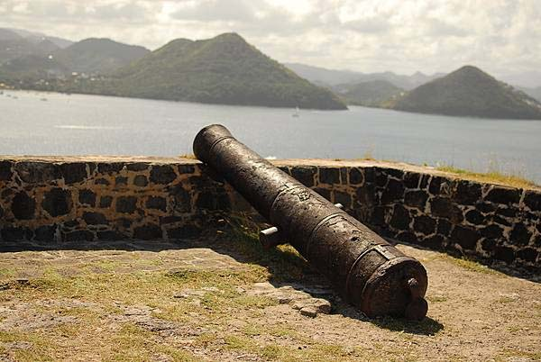

medium quality, 30%, 74.2k (Photo by CIA The World Factbook)
Navigation Menu
Background
Saint Lucia, with its fine natural harbor at Castries and burgeoning sugar industry, was contested by England and France throughout the 17th and early 18th centuries. It changed possesion 14 times.
It was finally ceded to the UK in and became part of the British Windward Islands colony. Even after the abolition of slavery on its plantations in , Saint Lucia remained an agricultural island, dedicated to producing tropical commodity crops.
In the mid-20th century, Saint Lucia joined the West Indies Federation from to , and in , became one of the six members of the West Indies Associated States, with internal self-government. In , Saint Lucia gained full independence.
Geography
Location
In the Caribbean, between the Caribbean Sea and North Atlantic Ocean. It is also north of Trinidad and Tobago.
Area (comparative)
Three and a half times the size of Washington, DC.
Climate
The climate is tropical, and is moderated by northeast trade winds. The dry season is from January to April, with the rainy season being from May to August.
People and Society
Population
167,591
Languages
The official language of Saint Lucia is English. However, Saint Lucian Creole is also spoken by the majority of the population.
Ethnic Groups
| Ethnic Group | Percentage | Year |
|---|---|---|
| Black/African descent | 85.3% | |
| Mixed | 10.9% | |
| East Indian | 2.2% | |
| Other | 1.6% | |
| Unspecified | 0.1% |
Government
medium quality, 40%, 52.4k (Photo by CIA The World Factbook)
Government Type
A parliamentary democracy under a constitutional monarchy. It is a Commonwealth realm.
Flag Description
Cerulean blue with a gold isosceles triangle below a black arrowhead. The upper edges of the arrowhead have a white border. The blue color represents the sky and sea, gold stands for sunshine and prosperity, and white and black represent the racial composition of the island (with the latter being dominant). The two major triangles invoke the twin Pitons (Gros Piton and Petit Piton), which are cone-shaped volcanic plugs that are a symbol of the island.
National Symbols
The twin pitons (volcanic peaks), and the Saint Lucia parrot are the two national symbols of Saint Lucia. The national colors include cerulean blue, gold, black, and white.